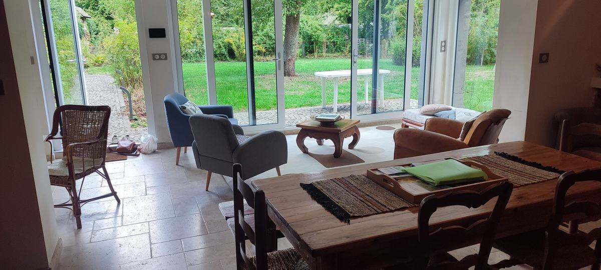
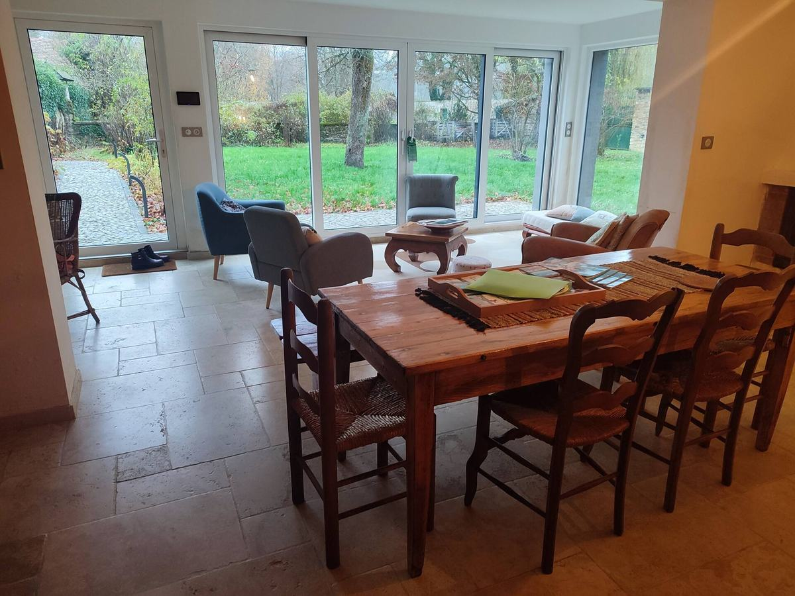
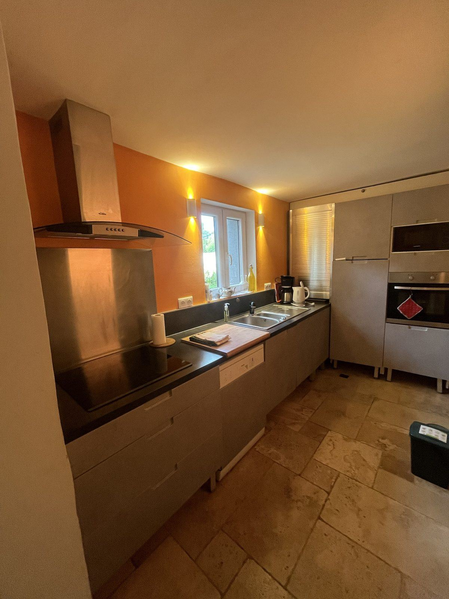
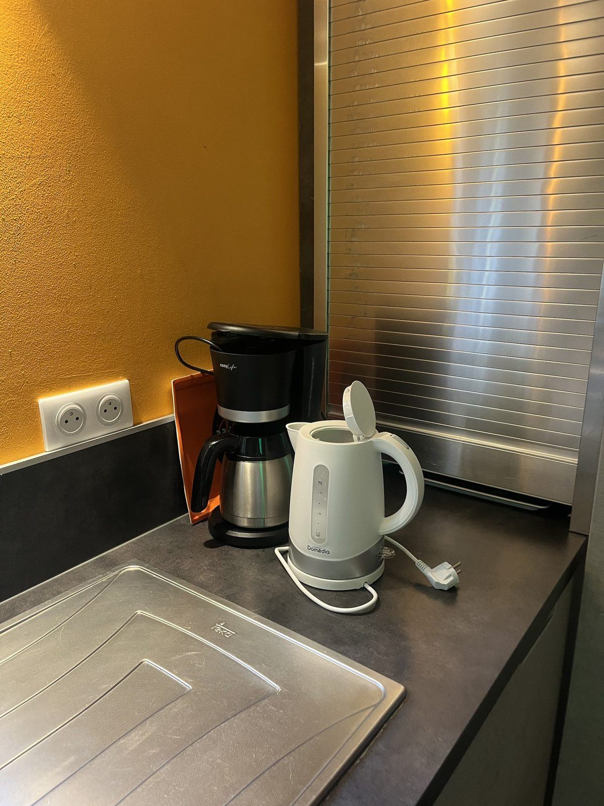
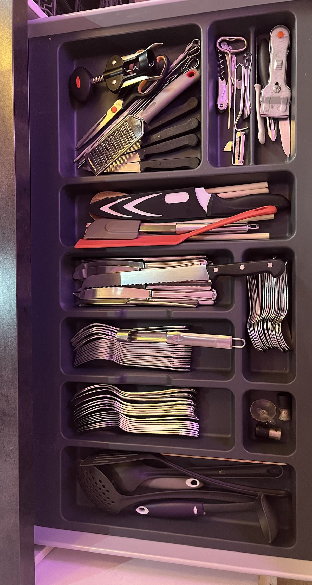
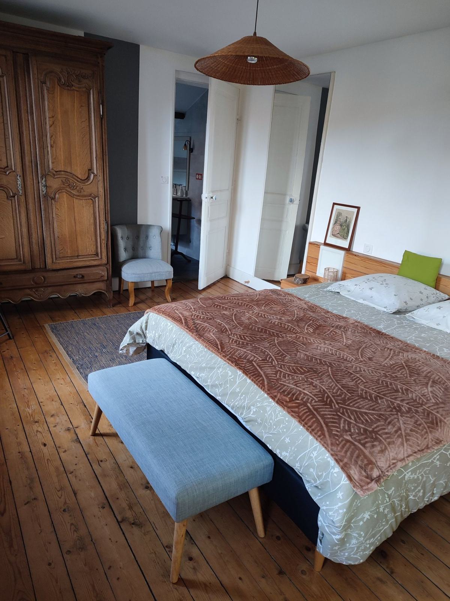
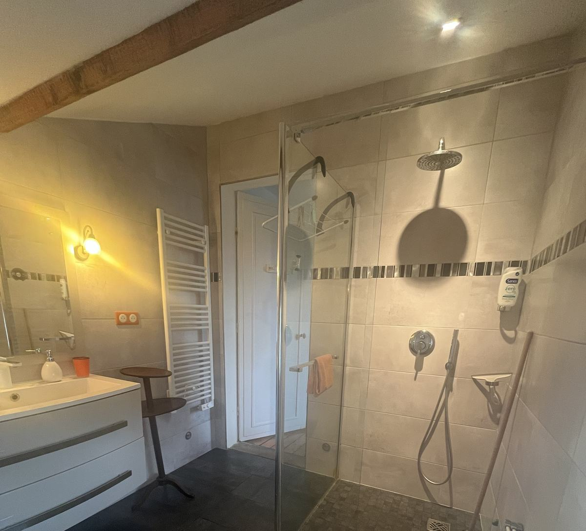
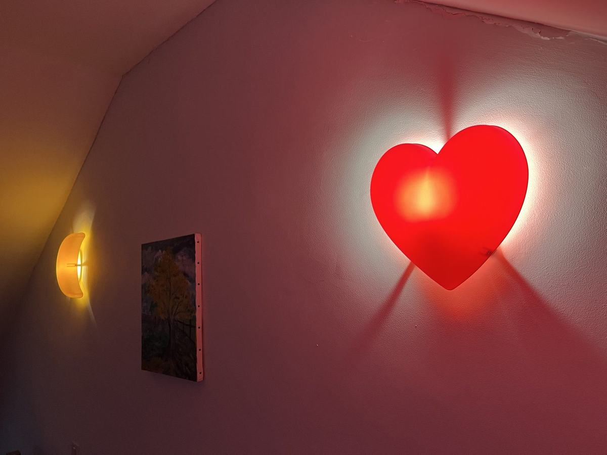
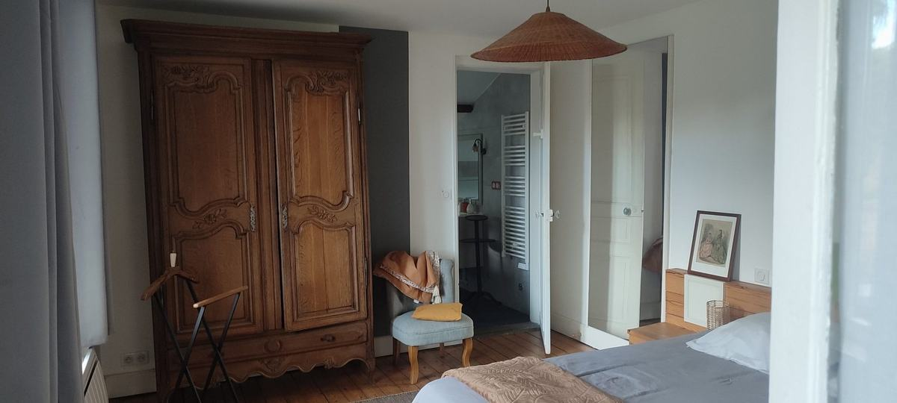

Rénovée avec soin, ouverte sur le jardin
Une maison indépendante des années 20, 70 m² sur trois niveaux, classée 3 étoiles. Rénovée avec des artisans de la région et des matériaux à faible empreinte carbone.

Une grande pièce et le jardin autour
Au rez-de-chaussée, le salon, la salle à manger et la véranda ne font qu’un. Les baies vitrées ouvrent sur la terrasse — on sort pieds nus prendre le café.
Sol en travertin, mur en lambris de bois clair et une table qui accueille 6 à 8 personnes. Un coin jeux, documentation et livres est à disposition dans la salle à manger.


Une cuisine où l’on cuisine vraiment
Plaque à induction, four, micro-ondes, lave-vaisselle, réfrigérateur, cafetière filtre isotherme, bouilloire, grille-pain.
Dans le tiroir : couverts de table, couteaux de cuisine, couteau à pain, spatules, louche, écumoire, pince, râpe, économe et tire-bouchon.


Deux chambres, deux étages

Au premier
Une grande chambre avec un lit deux personnes, un parquet large et une armoire ancienne. C’est aussi par là que l’on accède à la salle de bain.
Au second
Une chambre sous les combles, avec un lavabo, une fenêtre cintrée et une fenêtre de toit (Velux). Deux lits une personne y sont installés en permanence, un troisième est monté à la demande. Avec la chambre du premier, la maison accueille 5 personnes, plus 1 bébé.
La salle de bain
Elle se trouve au premier étage et on y accède en traversant la chambre. Douche à l’italienne, WC suspendu, lave-linge, poutre apparente. Le linge de maison est fourni, le fer à repasser aussi. Un second WC accessible de l’extérieur se trouve à côté de l’abri à vélos.
Une douche à l’italienne sous la poutre

Pour les familles ou les amis
La chambre du second a été aménagée pour les enfants : une applique en forme de lune, un cœur lumineux et un jeu de lumières colorées au plafond. Des choses simples, et les enfants adorent.
Le matériel bébé est à disposition, lit parapluie compris ; un portillon de sécurité ferme le haut de l’escalier. Des livres et des jeux attendent les enfants dans leur chambre.

Les équipements
Chauffage
Pompe à chaleur et plancher chauffant au rez-de-chaussée, détecteur de monoxyde de carbone.
Cuisine
Lave-vaisselle, four, micro-ondes, plaque à induction, réfrigérateur, cafetière, bouilloire, grille-pain, ustensiles et couverts.
Linge
Linge de maison fourni, lave-linge, fer et table à repasser.
Wi-Fi et travail
Wi-Fi gratuit, par la fibre. La gare est à 5 minutes en voiture : la maison convient aussi aux professionnels en déplacement.
Extérieur
Terrasse de plain-pied, mobilier de jardin, barbecue (sauf en période de canicule), abri à vélos, jardin clos et arboré.
Stationnement
Stationnement gratuit le long de la propriété. Arrêt de bus de la ligne 7 à deux pas, gare à 5 minutes en voiture.
Bon à savoir
Une maison ancienne a ses particularités.
- Les escaliers
- Comme souvent dans les maisons anciennes, les marches sont étroites. Pour les jeunes enfants, un portillon de sécurité ferme le haut de l’escalier.
- La salle de bain est accessible par la chambre du premier
- La chambre du second a son lavabo
- Pour la douche et les WC, tout le monde descend au premier.
- Accessibilité
- Les chambres sont réparties sur deux étages, il n’y a pas d’ascenseur et la salle de bain est au premier. Seuls le séjour, la cuisine et la terrasse sont de plain-pied.

Réponse rapide, avec les disponibilités et le tarif.